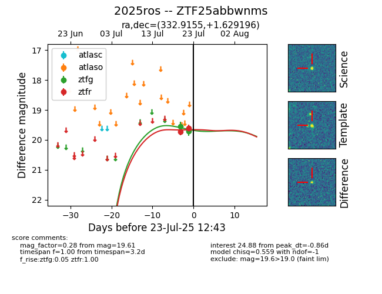

Target ZTF25abbwnms at 2025-07-23 11:52, see:
FINK: fink-portal.org/ZTF25abbwnms
Lasair: lasair-ztf.lsst.ac.uk/objects/ZTF25abbwnms
ALeRCE: alerce.online/object/ZTF25abbwnms
TNS: wis-tns.org/object/2025ros
YSE: ziggy.ucolick.org/yse/transient_detail/2025ros
alt names
ZTF25abbwnms (ztf,fink)
2025ros (tns,yse)
coordinates:
equatorial (ra, dec) = (332.9155,+1.62920)
galactic (l, b) = (63.2137,-41.99680)
photometry
last ztfg=19.70, ztfr=19.61
2 ztfg, 2 ztfr detections
